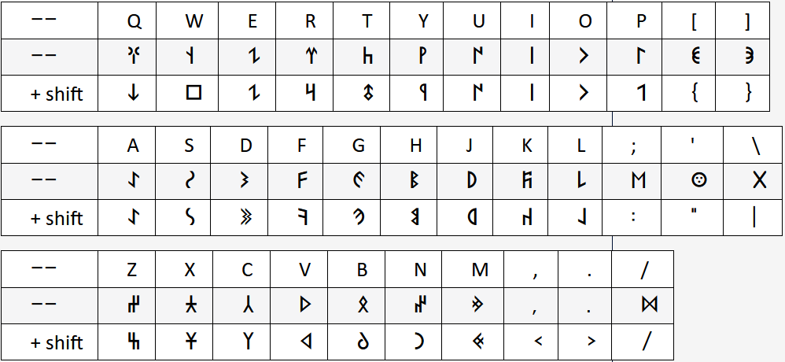

Таңба теру
Таңбаларды компьютерде теру үшін:
- Turik Round фонттын жүктеп компьютерге орнату;*
- Shift+alt арқылы пернетақтаны ағылшын тіліне қою;
- Word, OneNote сияқты бағдарламаны ашып сол фонтты таңдау;
- Төменгі кесте арқылы пернетақтада таңбалардын орналасуымен танысу;
- Shift+таңба немесе Caps Lock арқылы таңбаны ұяң|қатан қылу;

Мәтін жазу
Таңбаны оқып, теріп үйренгеннен кейін мәтін жазуға болады.
- Өзіңізге жақын тақырып таңдау;
- Word, OneNote сияқты бағдарламада мәтін жазу;
- Мәтінді PDF форматында сақтау. Еңбегіңізді сайтта көргіңіз келсе, келесі қадамдар жасау;
- PDF файлды Google Drive, One Drive сияқты бұлт қойманың біріне қою;
- Файлдын сілтемесін turkicrunes@gmail.com поштасына жіберу;
- Еңбегіңіз тексерістен өтіп "Оқу" бөліміне енеді;